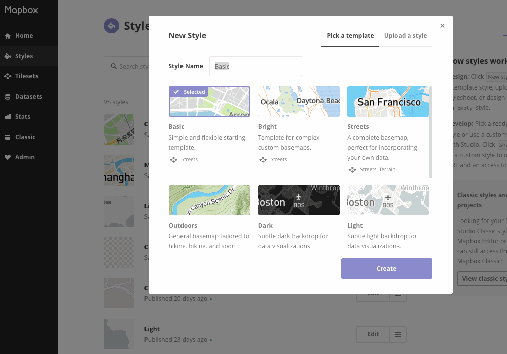
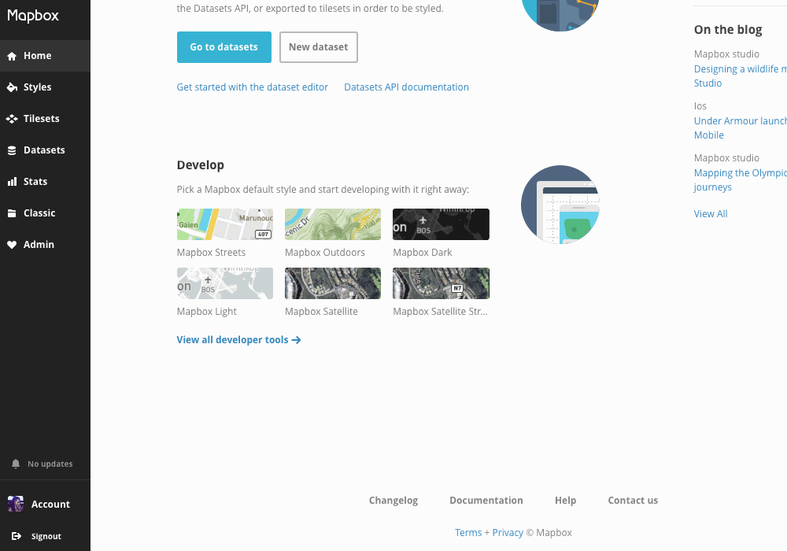

Four types of Mapbox maps.
- Mapbox GL private styles
- Custom maps
- Labs maps
- Comms wins


AJ — @ajashton
Amy Lee — @amyleew
Andreas — @andreasviglakis
Ian Villeda — @ian29
Nat — @slaughternat
Nicki — @nickidlugash
Xiaowei — @xrwang
Transit + highway shield custom icons
 map design
map design